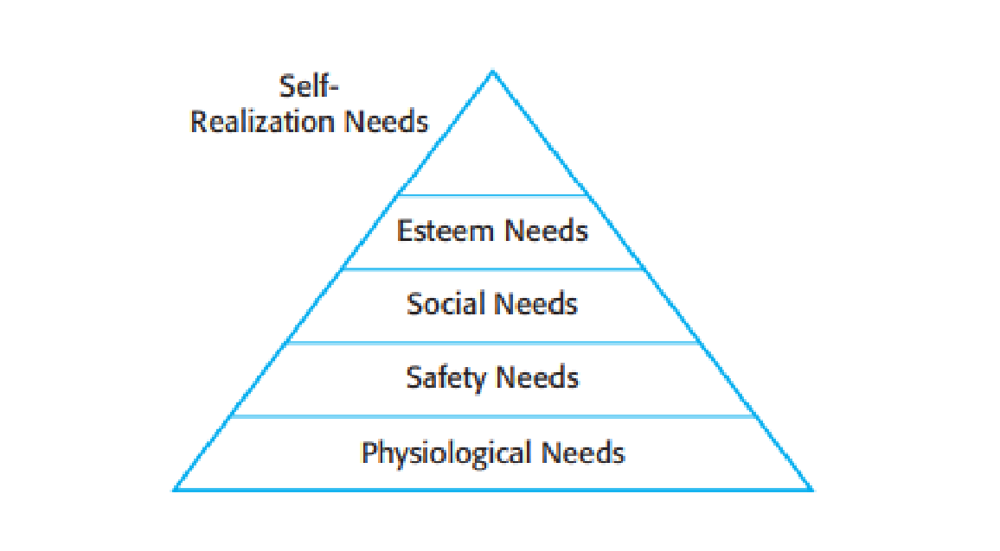

The people working in a software organization are its greatest assets. It costs a lot to recruit and retain good people and it is up to software managers to ensure that the organization gets the best possible return on its investment. In successful companies, this is achieved when people are respected by the organization and are assigned responsibilities that reflect their skills and experience.
Software project managers must understand both the technical and human aspects of development. However, technical expertise doesn’t always translate into strong people management skills. Engineers may lack the soft skills required to motivate and lead a project team. As a project manager, developing people management skills is crucial.
Four critical factors in people management are:
- Consistency: Team members should be treated fairly and consistently so that no one feels undervalued.
- Respect: Recognize different skills and give everyone an opportunity to contribute meaningfully.
- Inclusion: Encourage open communication and listen to all ideas, regardless of seniority.
- Honesty: Be transparent about project progress and your own knowledge. Admitting limitations builds trust.
People management is best learned through experience. This section, and the following one on teamwork, highlight common challenges and principles for managing technical teams effectively.
22.2.1 Motivating People
Motivation is key to ensuring that team members perform to the best of their abilities. It involves creating an environment that encourages people to contribute effectively. Demotivated employees may work slowly, make errors, and disengage from team goals.
Maslow (1954) proposed that human motivation follows a hierarchy of needs — from basic survival needs to higher psychological and self-fulfillment needs.

Figure 22.7 Human needs hierarchy
In a software organization, employees’ higher-level needs — social belonging, esteem, and self-realization — are most relevant. Managers can support these needs by:
- Social needs: Encourage team bonding and collaboration through regular interaction, even in remote settings.
- Esteem needs: Recognize achievements publicly and ensure fair compensation.
- Self-realization needs: Provide autonomy, challenging tasks, and training for skill development.
Motivation problems can arise when team members face personal difficulties or when projects shift away from their interests. Managers should offer support but also ensure responsibilities are met. Sometimes, reframing tasks as opportunities for growth or providing new challenges can restore motivation.
Maslow’s model focuses on individual needs, but people also find motivation in shared goals and teamwork. Belonging to a cohesive, purpose-driven group is a strong motivator.
Personality and Motivation
Personality types also affect motivation. Bass and Dunteman (1963) identified three main categories:
- Task-oriented people: Motivated by the intellectual challenge of the work itself.
- Self-oriented people: Motivated by personal success and recognition; they see work as a means to achieve goals.
- Interaction-oriented people: Motivated by collaboration and communication with others.
Interaction-oriented people thrive in teams, while task- and self-oriented individuals may prefer independent work. The right mix of personalities contributes to a balanced and effective development team.
Motivation can shift over time — self-oriented individuals may become more collaborative when they find fulfillment in team success, and vice versa.